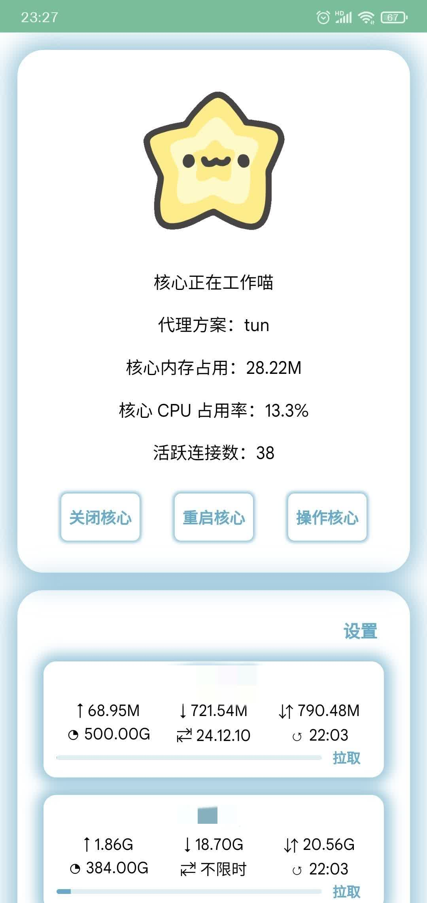

神秘模块详细教程
教程已使用 MkDocs 重建，请点我前往查看新教程
阅读须知
- 本教程所有代码块中以 $ 或 # 开头的是命令，没有的是命令执行结果或者代码
- 以 # 开头的命令是以 root 身份执行的，需要在执行 su 切换 root 身份后执行
- 本教程欢迎你来修改，修改可以前往GitHub提交 issues 或者 Pull requests
- 不要在国内分享/提及神秘模块/本教程，本教程可使用谷歌搜索“神秘教程”找到
- 群内发言询问前先查看本教程是否写明，已写明发言会被禁言
- 如果你从国内平台跳转到的本教程，请举报他！不要在国内提及本教程！
介绍
sing-box 介绍
- 正如 GitHub 下简明的介绍一致，sing-box 是一款开源的通用代理软件，多平台兼容性好，性能优异。
- 由于 sing-box 内核本身并无 provider，单独使用时对于机场用户十分不友好，与此同时衍生出了 provider 分支，以及启动模块的外置 provider，也就是下文将要介绍到的神秘模块，除此之外还有 𝐄𝟓 𝟖𝟔 𝟗𝟓 制作的 box4magisk，该启动模块可以使用 sing-box 的 provider 分支。
- 本教程以 Puer 是只喵 喵～ 制作的 Android sing-box 启动模块神秘模块为基础，介绍 sing-box 的基础功能及使用方法。
- sing-box 官方文档
神秘介绍
- 神秘模块（下文所称的神秘）是 Puer 是只喵 喵～ 制作的 sing-box Magisk 模块，用于外置 provider(提供者，机场订阅) 并启动 sing-box 内核
- 神秘发布渠道为 Telegram 话题组 原始人，启洞！ 下的“啊？”话题（特殊时期，已修改为私人群聊）
- 请仔细观看教程，不要在群里提问傻逼问题，右下角有文章索引目录
安装
绝对不要自作聪明地从 Play Store 安装 Termux！因为官方已放弃它的支持！
绝对不要自作聪明地从 Play Store 安装 Termux！因为官方已放弃它的支持！
绝对不要自作聪明地从 Play Store 安装 Termux！因为官方已放弃它的支持！
安装 Termux
Termux 有两个发布渠道，Github 和 F-Droid，小白建议下载 F-Droid 的版本（点击文字前往对应下载渠道）
安装 nodejs 和 aapt（电脑版请查看 README.md）
打开 Termux，依次执行以下命令，我会一条条讲解。
事先声明：由于官方源较慢，请酌情考虑挂梯子执行！也可以自己百度换源（不建议）。
这条命令用于更新目前 Termux 中的所有软件包，在安装过程中如果卡住不动了，请使用输入法，输入一个小写 y 并回车：1
pkg up -y
最后一步，安装 nodejs 和 aapt1
pkg in nodejs aapt -y
检查 nodejs 是否安装，如图所示即为安装成功1
node -v
这张图来自: 神秘模块入门教程（安卓端）
检查 aapt 是否安装成功，如图输出一大堆文字即为成功。1
aapt
如果在安装模块时提示 aapt 环境损坏 请执行 pkg uninstall aapt 卸载 aapt 后执行 pkg up && pkg in aapt 以重新安装 aapt。
如果在安装模块时提示 node 环境损坏 请执行 pkg uninstall nodejs 卸载 nodejs 后执行 pkg up && pkg in nodejs 以重新安装 nodejs。
安装神秘
前往原始人，启洞！的“啊？”话题下载最新版模块（注意看群文件）。安卓版文件名带有 android，选择保存到下载

打开 Magisk，在模块页面上方选择从本地安装，等待刷入完成后重启

配置
打开浏览器，地址栏输入并访问 http://127.0.0.1:23333 或者 http://localhost:23333，注意 yard 面板已不内置，若要使用请手动放到 /data/adb/sfm/Dashboard/ 文件夹下
目前神秘模块安装时默认会安装“神秘”app，请打开app操作，更新神秘模块时会自动清除数据，保证你用到最新的面板。
如果你非要使用网页也可，安装模块时使用音量+跳过安装神秘app（是否安装不影响网页使用），更新面板时请手动清除浏览器缓存或者在网站设置中清除“localhost”的数据再打开面板！
小白不推荐面板，资深用户请随意。
默认密码: node，如无必要，请不要修改。如果输入法输入 node 进不去，请复制粘贴，这是你输入法的问题。
主页

选项详解：
| 选项 | 解释 |
|---|---|
| 启动核心 | 启动 sing-box 核心（开启代理） |
| 关闭核心 | 关闭 sing-box 核心（关闭代理） |
| 重启核心 | 重启 sing-box 核心（重启代理） |
| 操作核心 | 包含出站设置、出站提供者、连接情况 |
| 设置 | 设置选项，用于修改出站、DNS、出站提供者等设置 |
设置

选项解释：
| 名称 | 解释 |
|---|---|
| 出站提供者 | （机场）网络订阅和本地（节点）文件 |
| 出站 | 流量出口，指你访问公网的途径 |
| 规则提供者 | 大饼！是香喷喷的大饼！ |
| 路由 | 大饼！是香喷喷的大饼！ |
| DNS | DNS 相关设置 |
| 模块设置 | 模块设置 |
| 入站 | 大饼！是香喷喷的大饼！（与出站相对） |
| 实验性功能 | 大饼！是香喷喷的大饼！ |
| 核心日志 | 日志设置，用不到，不用管，不用动 |
| 内置 NTP | NTP 相关设置，用于校准时间，用不到，不用管，不要动 |
出站提供者

具体操作
网络订阅
对于普通用户（不免流），只要设置提供者名称、选择类型为网络订阅、订阅链接即可。
免流其它参数自行修改。
本地文件
填入提供者名称、选择本地文件类型，之后提交。
提交完成后会进入文件编辑，此时填入节点信息，保存并再次提交即可。具体如何写请参考本地节点文件写法。
免流用户同上。
选项解释
| 名称 | 解释 |
|---|---|
| 网络订阅 | 机场网络订阅，从机场服务器获取节点信息 |
| 本地文件 | 本地节点文件，一般用于自建节点，免流。文件存放位置位于 /data/adb/sfm/src/FileProviders/，现在已经可以通过面板修改，无需打开目录 |
| 修改文件 | 修改本地节点文件，语法详见本地节点文件写法 |
| 订阅链接 | 订阅链接，推荐 Clash 的订阅 |
| 可否被引用 | 是否启用该出站提供者，启用表示使用这个订阅。喵佬原话：“（不启用）是根本不会被加入配置文件” |
| 订阅拉取间隔 | 多久更新一次机场订阅，默认 3600，也就是一个小时 |
| 拉取订阅时查询订阅信息 | 查询机场流量及使用情况 |
| 修改提供者内出站设置 | 下面的都是修改请求的，用于免流，不介绍 |
本地节点文件写法
使用节点链接
如：1
2vmess://ew0KICAidiI6ICIyIiwNCiAgInBzIjogIkBTU1JTVUItVjE1LeS7mOi0ueaOqOiNkDpzdW8ueXQvc3Nyc3ViIiwNCiAgImFkZCI6ICJqcDQuYWY0OWM0ZTRjMmVmLnNhbmZlbjAwNC5tZSIsDQogICJwb3J0IjogIjQ0MyIsDQogICJpZCI6ICJjNDg2OGI4YS0xZjVjLTQ1MzYtYjE5MS1kNTQyOWMyZTE0YjciLA0KICAiYWlkIjogIjAiLA0KICAic2N5IjogImF1dG8iLA0KICAibmV0IjogInRjcCIsDQogICJ0eXBlIjogIm5vbmUiLA0KICAiaG9zdCI6ICJqcDQuYWY0OWM0ZTRjMmVmLnNhbmZlbjAwNC5tZSIsDQogICJwYXRoIjogIiIsDQogICJ0bHMiOiAidGxzIiwNCiAgInNuaSI6ICIiLA0KICAiYWxwbiI6ICIiDQp9
hy2://962144c6@proxy.114514.com:9265/?insecure=1&sni=www.baidu.com#🇰🇷日本-Hysteria2具体请自行百度/谷歌对应协议的链接格式
使用 clash/mihomo 配置
如：1
2
3
4
5
6
7
8
9
10
11
12proxies:
# - {name: 节点名称, type: 协议类型, server: IP地址, port: 端口, udp: 是否是udp底层协议, tls: false, skip-cert-verify: 是否跳过证书验证, headers: {请求头}}
# 一行写法
- {name: 免费节点, type: http, server: 112.47.20.215, port: 443, udp: false, tls: false, skip-cert-verify: false, headers: {}}
# 多行写法
- name: 免费节点1
type: ss
server: 114.5.1.4
port: 9265
tls: true
sni: baidu.com
password: lYEiyacJG4m3UozsejfhRiwIjXfdnO4R+oflSfbl1G8=具体请查看 mihomo wiki
使用 sing-box 配置格式
如：1
2
3
4
5
6
7
8
9
10
11
12
13
14
15
16
17
18{
"outbounds": [
// 一行写法
{ "tag": "香港", "type": "hysteria2", "server": "proxy.example.com", "server_port": 23333, "password": "937a450d-b5e7-4a34-b671-ac9899abb7a47", "tls": { "enabled": true }, "tcp_fast_open": false },
// 多行写法
{
"tag": "香港",
"type": "hysteria2",
"server": "proxy.xireiki.com",
"server_port": 23333,
"password": "937a450d-b5e7-4a34-b671-ac9899abb7a47",
"tls": {
"enabled": true
},
"tcp_fast_open": false
}
]
}具体请查看 sing-box wiki
出站
这两个出站的名字可以改，但不能删除！！！
修改它们的名字，规则会自动尾随，但是删除会直接变成 direct，导致不论如何配置都不能连上外网、进行免流。
现在他们的名称已被修改，proxy 改为了 国外出口，domestic 改为了 国内出口，另 GLOBAL 改为了全局代理
如果你删了，没网、报错不要在群里提问！！！

具体操作
第一步，打开 国外出口 的设置，给 国外出口 出站选择其他出站或者出站提供者
假设你又一个出站叫国外自动，选择了它之后，你的流量就会通过它。
比如你又一个出站提供者叫XX机场，选择它之后，国外出口 出站会包含所有该提供者的出站（节点，如 trojan 协议的），你选择哪个，国外流量就走哪个
这一步必须选择至少一个出站或者出站提供者！！！
第二步，如果你免流，请给 国内出口 执行同样的操作，不过它是国内的流量
选项解释
| 名称 | 解释 |
|---|---|
| 自动选择 | 自动测速（urltest），自动选择最优（延迟最低）节点 |
| 手动选择 | 你自己选择节点（select） |
| 启用出站 | 是否使用这个出站 |
| 出站嵌套 | 包含其他出站作为出站提供者。你的默认只有 direct（直连，不通过代理）、block（断开，“黑洞路由”）、proxy（代理）、domestic（国内） |
| 出站测试地址 | 测速链接 |
| 出站测试间隔 | 两次测速之间间隔的时间 |
| 出站测试容差 | 每个节点测速间隔 |
| 引用出站提供者 | 嵌套哪些出站提供者。全部表示嵌套所有星盘，部分在下方选择出站提供者 |
| 筛选出站名称（包含） | 只要正则表达式匹配到的节点 |
| 筛选出站名称（排除） | 不要正则表达式匹配到的节点 |
| 筛选出站类型 | 如果不选择那么就是选择所有类型（传输协议）；如果选择一个及以上，那么除了你选择的协议类型对应的节点外，其余节点丢弃，不包含在本出站内 |
| 筛选出站端口 | 只要范围内端口的节点，比如 80:8080，表示只要 80 端口到 8080 端口的节点，:8080 表示比 8080 小的端口（包含） |
模块设置

选项解释：
| 名称 | 解释 |
|---|---|
| 核心跟随模块启动 | 开机就自动连上代理 |
| 设置 api 响应范围 | 仅本机表示只有本机能访问面板；任意来源表示所有连接上这台设备的热点的设备都能访问面板并操控它。面板地址是热点机的局域网 IP 加端口号，比如 http://192.168.43.1:23333 |
| 设置 api 验证密钥 | 进入面板的密码 |
| 定时更新网络订阅 | 字面意思，自动更新机场订阅。关闭之后不会再更新订阅，需要你手动点击更新或者全部施法 |
| 定时更新 Geo 数据库 | 字面意思，自动更新 Geo 数据库，用来更准确的判断流量是需要走国内还是走国外 |
| 核心启动时立即守护 | 启动核心就开始守护核心，而不是核心正确启动后 |
| 切换代理模式 | 神秘的流量处理模式，有规则模式，通过预设的规则自动判断流量走向；全局代理，所有流量都走国外；全局直连，所有流量都走国内 |
| 开启 ipv6 | 字面意思 |
| 面板显示速率 | 在主页显示当前的上传和下载的速度 |
| 使用 yard 面板，打开后 |
|
| 生成脱敏核心配置 | 生成用于分享求助的 baseConfig.yaml 文件 shareBaseConfig.yaml |
DNS

选项解释：
| 名称 | 解释 |
|---|---|
| DNS 服务器 | DNS 服务器配置列表 |
| DNS 规则 | 香喷喷的大饼 |
| fakeip | 香喷喷的大饼 |
| DNS 配置 | 香喷喷的大饼 |

DNS 服务器选项解释：
| 名称 | 解释 |
|---|---|
| 新增 DNS 服务器 | 添加 DNS 服务器配置 |
| 启用 DNS 服务器 | 勾选启用当前 DNS 服务器配置 |
| DNS 服务器名称 | DNS 配置名 |
| DNS 服务器地址 | DNS 服务器地址，比如 8.8.8.8、https://1.12.12.12/dns-query 、local 等 |
| DNS 服务器出站 | 指定出站使用当前 DNS 配置 |
| 结果偏好 | 共五个选项，使用全局配置、优先4代、优先6代、仅4代、仅6代，分别对应全局配置、prefer_ipv4（IPv4 优先）、prefer_ipv6（IPv6 优先）、only_ipv4（仅 IPv4）、only_ipv4（仅 IPv6）。 |
| DNS 服务器地址解析器 | DNS 地址（域名地址）解析的 DNS 配置，或者说，套娃解析？ |
| DNS 服务器解析偏好 | 解析当前 DNS 配置地址时使用。共五个选项，使用全局配置、优先 ipv4、优先 ipv6、仅 ipv4、仅 ipv6，分别对应全局配置、prefer_ipv4（IPv4 优先）、prefer_ipv6（IPv6 优先）、only_ipv4（仅 IPv4）、only_ipv4（仅 IPv6）。 |
| 备注 | 当前配置备注 |
修改配置文件
配置文件在 /data/adb/sfm/src/（安卓）或者你电脑上放模块的目录的src文件夹中。名称为 baseConfig.yaml
修改配置后点击重启核心，或者先关闭核心再修改或者修改完后前往设置 -> 模块设置，点击重载核心配置；修改完后点击关闭核心会发生原配置覆盖更改后的配置导致更改无效
详细修改可看官方文档，或者等我更新。
官方文档配置使用的格式是 JSON，是一种常见的数据格式，而神秘模块的配置使用 YAML 作为配置语言。
YAML 是 JSON 的超集，除了单行语法外，很不一样。
与 JSON 相比，YAML 对于字符串可以不需要使用双引号包含起来，比如 "text": "你好，这是一段文本" 在 YAML 中应该是这样的：text: 你好，这是一段文本（所有的冒号都是英文冒号）。
因为是可以不需要，所以 text: "你好，这是一段文本" 也是合法的。
又如，在 JSON 中你可以这么写1
2
3
4
5
6
7
8
9
10{
"name": "喵喵",
"age": 25,
"sex": "男",
"married": true,
"phone": [
"1xxxxxxxxxx",
"1xxxxxxxxxx"
]
}
但在 YAML 中，你应该这么写（写法之一，其他不推荐，易混淆）1
2
3
4
5
6
7name: 喵喵
age: 25
sex: 男
married: true
phone:
- 1xxxxxxxxxx
- 1xxxxxxxxxx
这是关于 JSON 的教程，希望能对你有所帮助。这是 YAML 入门教程。
常见问题
本机有网，热点没网？
本机有网，热点没网？
请检查是否开启热点模式，如果开了还没网，请尝试关闭或者开启兼容模式，最新版神秘一般不需要开启兼容模式。
如果热点不能访问面板，请开启兼容模式。
喵佬原话：“某些人热点没网就再开起来吧（我也不知道为啥）”
神秘 TProxy 模式怎么开？
找到 tun 入站（建议搜索 tag: tun）(在 baseConfig.yaml 配置文件中），如下：
1 | - enabled: true |
把 enabled 后的 true 改为 false，如下：
1 | - enabled: false |
接着找到 tun 入站下的 tproxy 入站，如下：
1 | inbounds: |
把 enabled 后的 false 改为 true，如下所示：
1 | inbounds: |
修改完后保存，打开神秘面板=>设置=>神秘，点击重载核心配置，接着返回主页点击重启核心。
不出所料，已经成功了。
如果想改回去，修改 enabled 后的值，false 改 true，true 改 false，再重载+重启核心即可。
WiFi 放行怎么做？
MacroDroid
下载 MacroDroid 和 MacroDroid 备份
安装 MacroDroid 后，导入 备份文件 到 MacroDroid
怎么放行应用？
修改 packages_list (在 baseConfig.yaml 配置文件中）里的 black 或 white，它们分别是黑名单（放行列表内的应用）和白名单（只代理列表内的应用）。默认是黑名单。
如果你闲麻烦，可以使用我的半成品面板，点击动图进入设置-名单里给对应的应用启用即可。
packages_list 原始内容
1 | packages_list: |
黑名单
mode 默认为黑名单，无须修改，如果要修改，参考白名单。
在 black 中添加包名，一行一个。
例如微信是 com.tencent.mm，原神是 com.miHoYo.Yuanshen（发现了吗？大小写敏感），这是手机应用的唯一名称。在小米手机中，长按桌面应用图标 => 应用详情 => 右上角ⓘ，就可以看见包名，点击复制即可。
如下所示。
1 | black: |
白名单
修改 mode 为 white。像下面这样
1 | packages_list: |
在 white 中添加包名，一行一个，如下所示。
1 | white: |
怎么开启/关闭 fakeip?
打开神秘面板，在启动时进入操控核心 -> 左下角齿轮，在切换路由模式处修改模式即可。
Geo 数据库报错？
如果你在 开唱/重启核心之后报错了，报错中有 geo 字眼，很有可能是 geo 数据库下载错误，请尝试更新 geo 数据库。具体方案：设置 - 模块配置 - 自动更新 Geo 数据库，关了再开即可
如问题未得到解决，请检查 geo 数据库格式和链接
遇到 parse outbound[n]: missing tags and uses 怎么办？
Puer 是只喵 喵：“你该死，一个 手动选择/自动选择 又不嵌套其他出站又不引用出站提供者，你拿头用”
请在没有嵌套任何出站、出站提供者的出站内嵌套出站、出站提供者，它不能为空！
关于报错中出现 1.8.0
报错：1
cache_file and related fields in Clash API is deprecated in sing-box 1.8.0, use experimental.cache_file instead.
如果你的报错是这个，请遵循迁移指南修改配置或者重新安装神秘。
关于 NoTermux 版本的神秘
此版本不需要 Termux，请忽略环境配置步骤，从原版神秘覆盖安装时需要重启，其他与原版相同。
下载请前往我的频道，不保证更新。
这是修改版，不是原版
这是修改版，不是原版
这是修改版，不是原版
decode config at box.json: route.rule_set[0]: missing path
神秘的 rule_set 强制本地化，请给 rult_set 设置 path 路径，例如：
1 | route: |
上面中的 path 后面的就是你要设置的内容，神秘的 rule_set 文件放在 /data/adb/sfm/RuleProviders 文件夹下，请遵循模块路径。上方开头的 ./ 表示 /data/adb/sfm 目录。
具体可以查看 /data/adb/sfm/RuleProviders 目录查看有哪些规则。
强制重启手机后，神秘无法启动？启动失败 node.log 里有 Valid JSON 关键字?
原因可能是强制重启手机后导致 appLables.json 文件损坏，前往 /data/adb/sfm/src 删除这个文件后重新刷模块即可解决。
2024年之后的版本节点全灰如何解决？
请更新 202401060515 及之后的版本